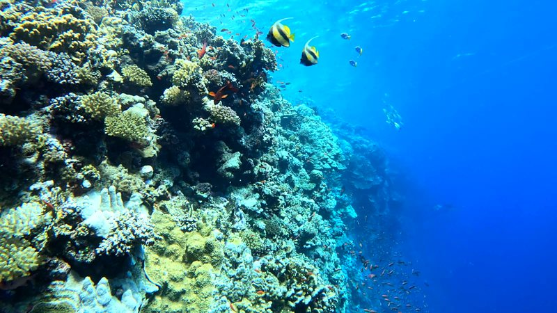
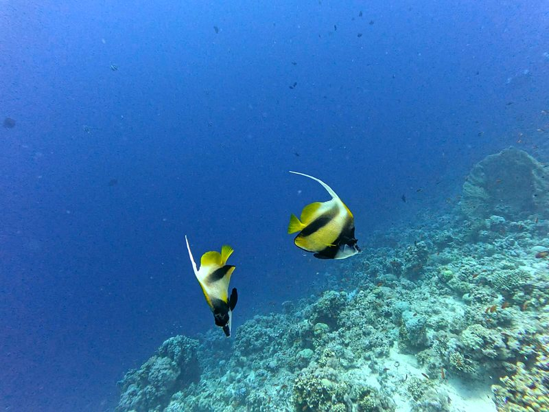

Full Professional Pathway
Qualified to train divers from their very first steps all the way through to PADI Divemaster and specialty certifications.

@mootazkafii · PADI Scuba Instructor
Beginner → PADI Divemaster · Patient, family-focused & safety-first.
📍 Sharm El Sheikh, Red Sea 🇪🇬
EnglishEspañolالعربية




 Discovery Dives
Your very first breath underwater, in a calm and supportive environment.
Discovery Dives
Your very first breath underwater, in a calm and supportive environment.
 PADI Specialty Courses
A wide variety of PADI Specialty courses to build real skill and confidence.
PADI Specialty Courses
A wide variety of PADI Specialty courses to build real skill and confidence.
 PADI Divemaster
Start your journey toward becoming a dive professional.
PADI Divemaster
Start your journey toward becoming a dive professional.
Tap a course to message Mootaz — availability and specialty options confirmed directly.
Qualified to train divers from their very first steps all the way through to PADI Divemaster and specialty certifications.
10+ years guiding certified divers in Sharm El Sheikh means I know these reefs inside and out—from the wall drops of Ras Mohammed to the currents of Tiran.
Patient, encouraging, and highly recommended by parents for teaching children and families at their own comfortable pace.
A conservative, safety-conscious approach to dive planning so you and your family can dive with total peace of mind.
Passionate about sharing the beauty of the underwater world, with the patience needed to build skill and confidence in every diver.
Lessons and dive briefings in English, Spanish, or Arabic, so you can learn comfortably in the language that suits you best.

With 10 years of experience guiding certified divers in the Red Sea and 6 years as a PADI Scuba Instructor, I turn dive dreams into unforgettable underwater adventures. I offer a full range of PADI training—from beginner discovery dives all the way up to PADI Divemaster, along with a wide variety of PADI Specialty courses.
I specialize in family-friendly diving, helping kids, teens, and adults build real confidence in the water. Known for my high energy, endless patience, and strict, conservative approach to safety, I create a calm and supportive environment whether you're taking your very first breath underwater or starting your journey toward becoming a dive professional.